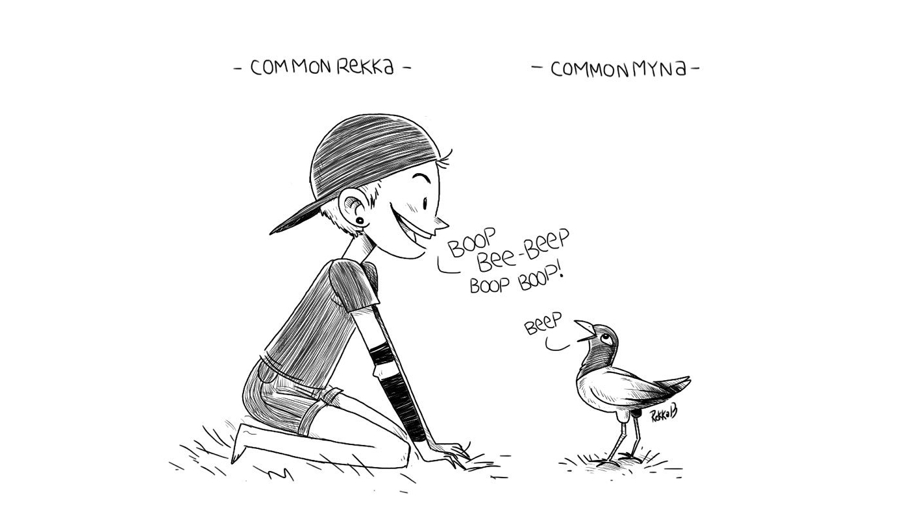

Bird journal
Collecting bird sightings like pokemon.
"To think like a mountain means to have a complete appreciation for the profound interconnectedness of the elements in the ecosystems. It is an ecological exercise using the intricate web of the natural environment rather than thinking as an isolated individual." Aldo Leopold
Vancouver Island
- Great horned owl, with babies! (2023)
- Common Murre (2022)
- Black oystercatcher (2021)
- Hooded merganser (2021)
- Harlequin ducks (2020)
- Great blue heron (2020)
- Glaucous winged gull (2020)
- Canada goose (2020)
- Black turnstone (2021)
- Pelagic cormorant (2016)
- Pigeon Guillemot (2020)
- Anna's Hummingbird (2020)
- Mallards (2020)
- Common peafowl (2020)
240621. Days are very long now, there was good light at 2100 yesterday so Dev & I went out for a row around the bay. The local sailing club here lends out a rowing dinghy to members. Tsehum Harbor shoals at low tide, but the water was high enough that we could row everywhere. We circled the bay twice, following a large gathering of geese and their goslings. The goose caravan was eating filamentous algae as they went, making loud mouth sounds as they did. A very nice evening.
190221. Love taking walks along the beach at low-tide to see what is normally hidden. Lots of smooth rocks, miniature snails, barnacles and seaweed. Spotted some black turnstones too, small wading birds, picking crustaceans and mollusks from under stones and algae mats.
New Zealand
- Pukeko (2018)
- Kererū (2018)
- White-fronted tern (2018)
- Kāruhiruhi (2018)
- Welcome swellow (2018)

South Pacific Islands
- Black noddy (2017)
- Fijian parrot finch (2018)
- Red-footed booby (2018)
- Common myna (2017)
- Frigate bird (2017)
North Pacific Ocean
- Northern storm petrel (2020)
- Leach's Storm-Petrel (2016)
- Laysan albatross (2020)
- Black-footed albatross (2020)
- Sooty Shearwater (2020)
Back to top.